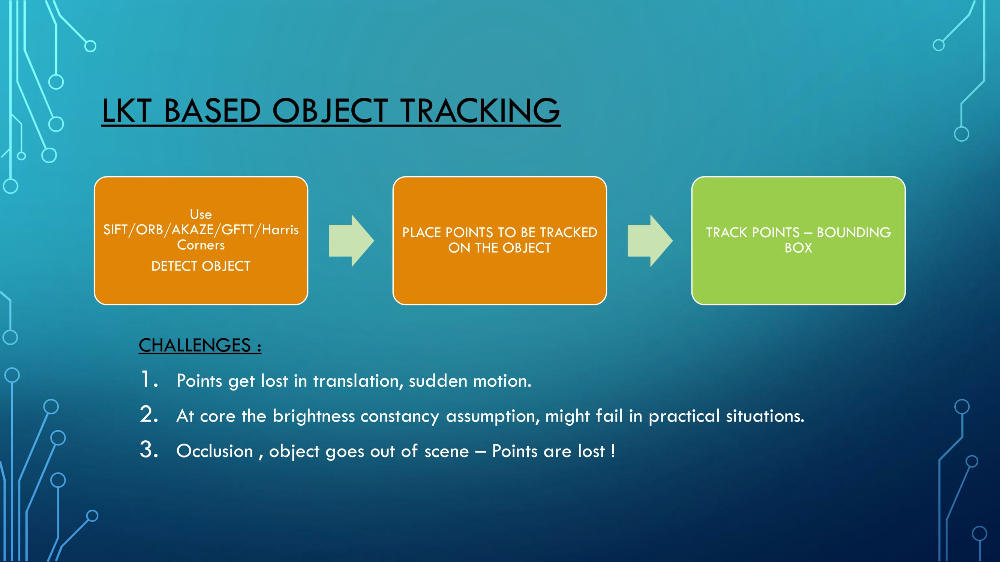
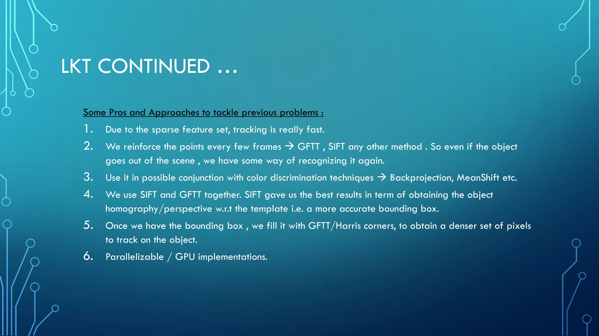
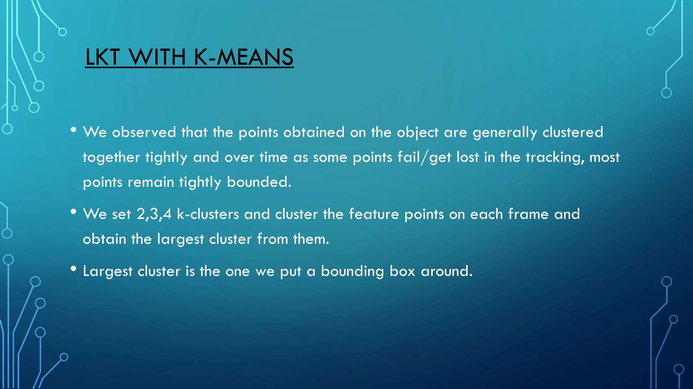
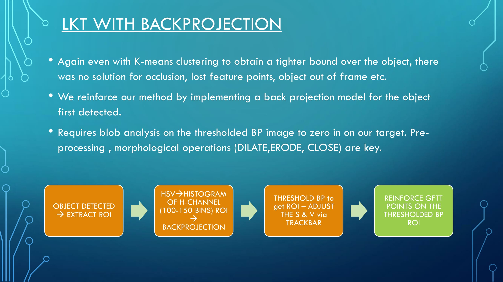
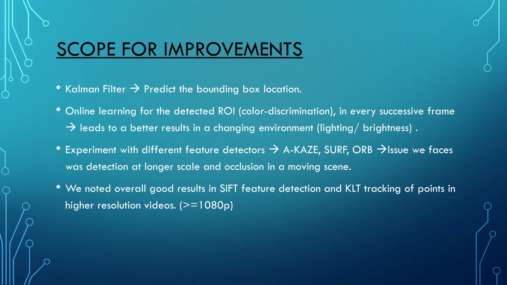

80 from the top and 400 from the left
Lukas-Kanadi-Tomasi (LKT) Tracker


LKT with K-Means Clustering of GFTT-Corner points

LKT Tracking & Histogram Backprojection


Authors and Contributors
Github - Bassam Arshad (@bassamarshad) 2016
Support or Contact
Having trouble with Pages? Check out our documentation or contact support and we’ll help you sort it out.